If you don't want to print now,
Information from the variation in data
Variation in data is not simply an annoyance — the variation itself can hold important information.
Simply sorting a data set into order can highlight features that are not obvious in the raw data, such as the lack of values between 3.4 and 4.9 in the data below.
| 6.1 | 5.2 | 7.9 | 2.3 | 3.4 |
| 1.4 | 5.3 | 7.1 | 3.2 | 2.8 |
| 5.1 | 6.9 | 6.1 | 3.4 | 5.2 |
| 5.5 | 2.0 | 1.3 | 4.9 | 6.4 |
Stems and leaves
In a stem and leaf plot, the individual data values are represented by digits called 'leaves' that are stacked to the right of a column of 'stems'. Each leaf digit, together with the corresponding stem, gives the most significant digits of the number.
A stem and leaf plot must be accompanied by a key that shows where the decimal point appears in the combined stems and leaves.
Need for more flexibility
Sometimes basic stem and leaf plots are not flexible enough — there would be either too many or too few rows of leaves to show the varying density well.
Repeating each stem 2 times (with leaves 0-4 on the lower copy and leaves 5-9 on the upper one) or 5 times (with leaves 0-1, 2-3, 4-5, 6-7 and 8-9 on the different copies) gives intermediate numbers of stems.

Smoothness
When drawing a stem and leaf plot, the aim is for a smooth shape to the stem and leaf plot, and this is usually achieved by between 10 and 20 rows of leaves.
Drawing by hand
Stem and leaf plots are mostly used because they are easy to draw by hand:
To simplify drawing, values are truncated to give their stems and leaf digits, not rounded. For example, 7.98 and 7.90 would both be displayed as leaf '9' on the stem '7'.
Stacked dot plots
Stacked dot plots are related to stem and leaf plots, with the vertical column of stems replaced by a standard horizontal axis and the stacks of leaves replaced by stacks of crosses. The stacking again highlights regions of high density effectively (tall stacks).

Some of the detailed information about the individual values in a stem and leaf plot is lost, but this information is rarely important and the diagram shows the distribution of values equally well.
Jittering the crosses
In a stacked dot plot, the grouping of crosses into stacks means that the crosses cannot be drawn at exactly the correct position along the axis. An alternative to stacking the crosses is to jitter them — draw them at exactly the correct position along the axis but randomly move them away from it:

Note that the vertical jittering is random and therefore tells you nothing about the data.
Density
In a stacked dot plot (or stem and leaf plot), the highest stacks contain the most values. These stacks have the highest density of values.
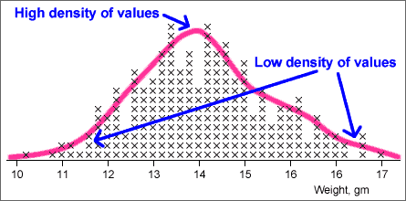
Histograms more directly show how density varies along the axis.
Histograms
In a simple histogram, the axis is split into sub-intervals of equal width called classes. A rectangle is drawn above each class with height equal to the number of values in the class — the frequency of the class.
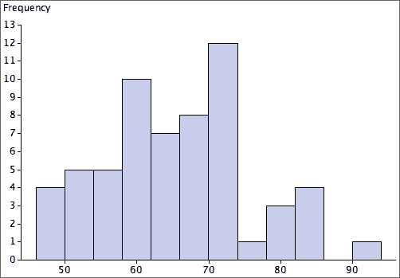
Aim of a 'smooth' histogram
There is considerable freedom in the choice of histogram classes. The exact shape depends on:
We usually choose classes with the aim of smoothness in the outline of the histogram rectangles.
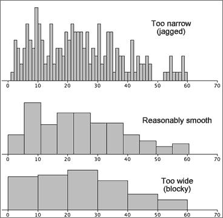
The choice of 'best' classes is subjective, but...
If your conclusions about what a histogram tells you about the data depend on the choice of histogram classes, you are over-interpreting its shape.
Warning for small data sets
For small data sets, changing the class width and the starting position for the first class can give a surprising amount of variability in histogram shape, so be extremely wary of over-interpreting features such as clusters or skewness.
Indeed, it is probably better to avoid using histograms unless there is a reasonable number of values — stacked dot plots are far less likely to mislead you over minor features.
Relative frequency
When all histogram classes are of equal width, histograms are often drawn with a vertical axis giving the frequencies (counts) for each class. The vertical axis can alternatively be labelled with the relative frequencies (proportions) for the classes.
(There is no harm in including both axes.)

Area equals relative frequency
An important property of histograms is that the proportion of values in one or more classes equals the proportion of the histogram area above these classes.
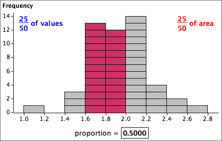
Therefore,
Relative frequency = proportion of the total area
Frequency table
A computer is normally used to draw histograms. Hand-drawn histograms are based on a frequency table that lists the histogram classes and their frequencies.
To avoid ambiguity in the histogram, the class boundaries should be chosen to ensure that no data values are on boundaries. For example,

Height of a histogram rectangle
To draw a histogram by hand with equal class widths, each class rectangle can be drawn with height equal to its class frequency. If class widths vary, we need to calculate the density for each class with the formula:

and use this for the rectangle heights.
Mixed class widths
For some data sets, wider classes give a smoother histogram in some ranges of values (e.g. in the tail of a distribution) and narrower classes are better in other parts of the distribution (usually where there is greater density of values).
In a correctly drawn histogram, each value contributes the same area.
Histograms can be drawn with mixed class widths, but it would be badly misleading to make the rectangle heights equal to either the class frequency or relative frequency.

Outliers
Values that are considerably larger or smaller than the bulk of the data are called outliers.
An outlier may have been incorrectly recorded, or there may have been other anomalous circumstances associated with it. Outliers must be carefully checked if possible. If anything atypical can be found, outliers should be deleted from the data set and their deletion noted in any reports about the data.
Outliers and skew distributions
Deciding whether a value is an outlier or not is affected by the shape of the distribution of values for the rest of the data.


Clusters
If a dot plot, stem and leaf plot or histogram separates into two or more groups of values (clusters), this suggests that there may be more fundamental differences between the 'individuals' in the groups.

Further investigation should be made of the individuals in the clusters to find whether they also differ in other ways.
If the clusters were less distinct, especially in small data sets, you would need external supporting evidence before concluding that the individuals separated into meaningful groups.
Distribution of values
Even when a data set has no outliers or clusters, the distribution of values also contains useful information. Important features are:
The concepts of centre and spread are particularly important.
Dangers of overinterpretation
Features in the distribution of a small data set may not be meaningful.
Be careful not to overinterpret patterns in small data sets. Clusters, outliers or skewness may appear by chance even if there is no meaningful basis to these features.
Pronounced outliers or clusters may be taken as indicative of something meaningful in the underlying process. However less pronounced outliers or clusters must be supported by outside evidence before these features can be interpreted as meaningful.
Summarising centre and spread
Two important aspects of a distribution of values are particularly important.
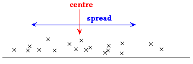
We will describe centre and spread with numerical values called summary statistics. They provide particularly concise and meaningful comparisons of different groups.
Median
Half of the data values are below the median and half are above it:

Mean
The mean is:

If each value in a dot plot was a solid object resting on a beam with negligible mass, the mean is the value at which the beam will balance.

Because of the leverage exerted by points far from the centre, the mean is further into the tail of a skew distribution than you might expect.
Although both describe aspects of the 'centre' of a distribution, the median and mean are not the same and can occasionally have very different values.
Social vs economic indicator
For some data sets, the median can be considered to be a social indicator, whereas the mean can be interpreted as an economic indicator. In a company,
Outliers
An outlier has little effect on the median, but affects the mean more strongly. The median is said to be more robust.
Skew distributions
When a distribution is fairly symmetrical, the mean and median are similar, but if the distribution is skew, then the mean is usually further into the tail of the distribution than the median.

Simple measures of spread
These are (relatively) easy to understand and explain to others, but neither are commonly used.
Standard deviation
The standard deviation is a 'typical' distance of values from the sample mean.

The standard deviation is denoted by the letter s and is defined by:

The numerator,  , depends on the distances of the values to the mean, so it will be small if the values are all close to the mean and big if they are far from the mean.
, depends on the distances of the values to the mean, so it will be small if the values are all close to the mean and big if they are far from the mean.
Variance
The square of the standard deviation, s2, is called the sample variance. Variances are sometimes reported and used but standard deviations are easier to interpret since they have the same units as the original data (e.g. kilograms or dollars).
'Quarter-range' rule of thumb
For many data sets, the standard deviation is just under a quarter of the range.
 |
This is a simple rule, but is only very approximate. The standard deviation can be more than a quarter the range in distributions with short tails or much less if there are long tails or outliers.
The 70-95-100 rule of thumb
The 70-95-100 rule is more accurate. In many distributions,
The 70-95-100 rule holds approximately for most reasonably symmetric data sets, but for skew data or distributions with long tails, outliers or clusters, it is often less accurate.
Understanding the definition of the standard deviation is much less important than knowing its properties and having a feel for what its numerical value tells you about the data.
Guessing s from histogram
About 95% of the values should be within 2s of the mean, so after dropping the top 2.5% and bottom 2.5% of the values (histogram area), the remainder should span approximately 4s. Dividing this range by 4 should approximate the standard deviation.

Sketching a histogram from the mean and s
Similarly, you should be able to draw a rough sketch of a symmetric histogram with any mean and standard deviation that you are given. (It would be centred on the mean and 95% of the area would be within 2s of this.)
The shape of a distribution
The mean and standard deviation hold no information about the shape of a distribution, other than its centre and spread.
Many different distributions have the same mean and standard deviation.
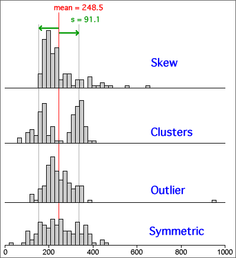
Clusters, outliers and skewness are important features of a data set and should influence the analysis that you perform and the conclusions that you reach. In particular, if you ignore outliers or clusters, you could easily reach the wrong conclusions.
It is therefore essential that you look at a graphical display of a distribution before summarising with a mean and standard deviation.
Statistics and parameters
Summary statistics about a sample are called sample statistics whereas the corresponding summaries from a population are called population parameters.
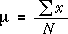
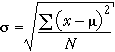
You will need recognize that µ and σ refer to population parameters but do not need to remember their formulae.
Multiple groups of individuals
Sometimes we know that the individuals belong to two or more groups before the data are collected or, equivalently, that they have different values of an extra categorical variable.
Information about groups is best displayed by plotting the separate groups against a common axis.

Back-to-back stem and leaf plots
Stem and leaf plots can be used to compare two groups of individuals, if drawn on different sides of a common column of stems. (They are less useful if there are three or more groups.)

Relative frequencies to compare two groups
Histograms may be superimposed to compare two groups. However if the groups differ in size, it is usually more meaningful to compare relative frequencies (proportions) than the counts in the classes.
Use relative frequency histograms to compare groups.
For example,
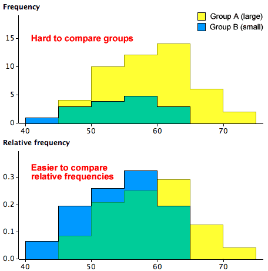
Frequency polygons
A frequency polygon is closely related to a histogram with equal class widths. It joins the midpoints of the tops of the class rectangles and tends to give a smoother outline than the corresponding histogram.

It is easier to distinguish and compare superimposed frequency polygons for two groups than the corresponding histograms.

Unhelpful detail when comparing groups
Dot plots, stem and leaf plots and histograms contain a lot of detail about the distribution of values in a data set. This level of detail is useful when examining a single data set, but when several groups of values are being compared, the detail distracts from the main differences between the groups.
For example, the jittered dot plots below do not concisely summarise the differences between the five groups.

Five-number summary
Five values are enough to capture a lot of information about the distribution of values in a data set.
These values split the data set into four groups with approximately equal numbers of values.
Box plot
A box plot displays the five-number summary graphically.

Details
The median, m, is the middle value if there is an odd number of values in the data set. If there is an even number of values, the median is the average of the middle two.
Different authors give slightly different definitions for the upper and lower quartiles. One definition of the lower quartile is the median of the lowest half of the data — i.e. of the values lower than m. (The upper quartile would then be defined as the median of the top half of the values.)
Provided you are consistent, different definitions of the quartiles should lead you to the same conclusions.
Box plots and histograms
Since the median and quartiles split the data set into quartiles, they also split a histogram of the data into four approximately equal areas.

What does a box plot tell you about the distribution?
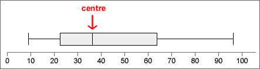


Outliers and skew distributions
Basic box plots cannot show whether the minimum and maximum in a distribution are outliers or simply the end of skew distributions.

Box plots and clusters
Box plots cannot show clusters in data.

Before using a box plot, always look at the data with a dot plot or histogram to make sure that there are no clusters.
Box plots to compare groups
To display the distribution of values in a single set of data, a dot plot or histogram is more useful than a box plot. However for comparison of two or more groups of values box plots are particularly effective — they highlight differences between the centres, spreads of values and skewness of the groups.

Stability of the shape of box plots
When used for small data sets, features in dot plots, stem and leaf plots and histograms are relatively unstable. Although more stable, the shapes of box plots also vary if different data are collected from the same process.
Care must be taken not to over-interpret the shape of box plots for small data sets.
As with other displays, the larger the data set, the more stable the box plots become.
The data matrix
Many datasets contain several measurements from each individual (or plant, item or other unit). Each measurement type is called a variable.

A data set with more than one variable is called multivariate. One with two variables is called bivariate.
Scatterplots
A scatterplot shows each individual as a single cross against a vertical axis (for the variable, Y) and a horizontal axis (for the other variable, X).

By convention, the variable on the vertical axis is called Y and the variable on the horizontal axis is called X.
Scatterplots are needed to display relationships
The relationship between two variables cannot be determined from examination of the two variables in isolation. The two datasets shown in the scatterplots below have the same marginal distributions for X and Y, but the variables are related in very different ways.

Marginal distributions
Although they do not contain information about the relationship between the variables, a display of the marginal distributions can be usefully added to a scatterplot to enhance it, perhaps highlighting skewness in X and Y.

Strength of relationship
The most important information that a scatterplot shows is the strength of the relationship between the variables. The closer the points to a straight line or curve, the stronger the relationship.
If higher values of one variable tend to be associated with higher values of the other variable, the crosses on the scatterplot will be in a band with positive slope and the relationship is said to be positive. If high values of one variable tend to be associated with low values of the other variable, we say that there is a negative relationship.
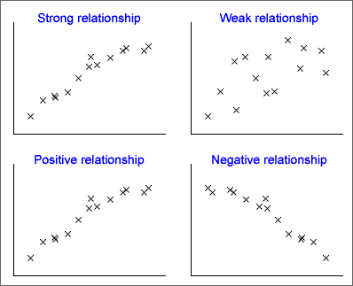
The strength of the relationship between two variables is usually the most important information that we gain from a scatterplot but a scatterplot may display other features.
Outliers
Values that seem 'different' from the rest of the data are called outliers.
An outlier may be an extreme value of one or other variable, but an individual may be an outlier even though neither X nor Y is unusual on its own. One point is an outlier in each of the three data sets below.


The point is an outlier in the righthand data set because it lies well above the main group of points — its y-value is much higher than others with similar x-values.
Importance of outliers
Outliers are features of a data set that must be carefully checked. An outlier is often caused by a recording or transcription error, so...
First check that the values of the variables are correctly recorded.
Sometimes an outlier arises because an individual is fundamentally different from the others. Identifying what makes the individual different often gives considerable insight into the data.
The individuals should be further examined (perhaps collecting further information from them) to try to assess whether the outlier individual has distinct characteristics.
An outlier that is either extreme or that has other distinctive characteristics would often be deleted from the data set, but should be mentioned in a report about the data.
Clusters
Sometimes the cloud of crosses separates into two or more groups which are called clusters. As with outliers, clusters provide important information that should be further investigated.

The individuals should be examined (perhaps collecting further information from them) to assess whether the clusters correspond to individuals with distinct characteristics. For example, the clusters may correspond to males and females, or two different species of plant.
Interpreting outliers or clusters
We have described some information that may be read from a scatterplot. But how strong must the corrresponding patterns be before we should report them?
In both univariate and bivariate data sets, outliers or clusters must be distinct before we should conclude that they are real, in the absence of further external information confirming that the individuals are distinct.
Particularly in small data sets, outliers, clusters and other patterns may arise by chance, without being associated with any real features in the individuals.
Be careful not to overinterpret features in scatterplot unless they are well defined, especially if the sample size is small.
Causal relationships
In many bivariate data sets, the relationship between the two variables is not symmetric. From the nature of the variables and the way that the data were collected, it may be clear that one variable, X, can potentially influence the other, Y, but that the opposite is impossible.

In such data, the variable X is called the explanatory variable and Y is called the response.
Experiments
In an experiment, the person conducting the experiment controls the values of the explanatory variable. A well-designed experiment always ensures that the relationship between the explanatory variable and response is causal.
Observational studies
If the person collecting the data has no control over either of the variables, and simply records a pair of values from each individual, then the data are called observational. If one variable is an earlier measurement than the other, we may also be able to treat it as an explanatory variable and the later variable as the response.
Even if the relationship is not causal, we are sometimes interested in predicting the value of one variable from the other. The variable being predicted would then be treated as the response.
Units and strength of a relationship
A numerical summary of the strength of the relationship between two variables should not depend on the units in which we measure the two variables. The strength of the two relationships between Sales (of ice cream) and Temperature are the same in both of the scatterplots below.
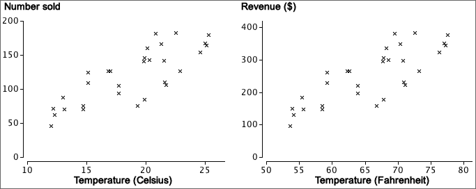
We therefore start by defining units-free versions of the two variables and will summarise the strength of the relationship in terms of them.
Z-scores
The standardised form of a variable X is found by subtracting its mean then dividing by its standard deviation,
| standardised value, |
|---|
The resulting values are called z-scores and are the same, whatever the units in which X was originally recorded.
Properties of z-scores
A standardised variable always has zero mean and standard deviation one.

From the 70-95-100 rule-of-thumb,
An individual's z-score tells you how many standard deviations it is above the mean. From its value, you can tell whether the value is very high (say over +2) or low (say under -2) in relation to the other values of the variable.
Definition
The correlation coefficient is usually defined by the formula

It is however easier to understand if written in terms of standardised versions of X and Y,

The correlation coefficient is a kind of average of the products of the z-scores.
How does r relate to the shape of a scatterplot?
The following properties of r explain in general terms how its value is related to the strength of a relationship in any particular scatterplot.
 |
 |
 |
|
 |
 |
| −1 ≤ r ≤ +1 | |
How does r relate to the shape of a scatterplot?
The properties on the previous page describe the general behaviour of the correlation coefficient, but do not give enough resolution for you to anticipate the type of scatterplot that might have correlation coefficient 0.8 say, or 0.96.
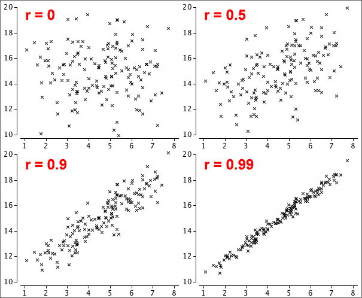
Note that values of r between -0.5 and 0.5 correspond to very weak relationships.
Correlation and nonlinear relationships
The correlation coefficient, r, is a good description of the strength of a relationship provided the crosses in a scatterplot of the data are not scattered round a curve. If the data are scattered round a curve, the relationship is called nonlinear and r may seriously underestimate its strength.

The correlation coefficient does not describe the strength of nonlinear relationships adequately.
Always look at a scatterplot first
Although the correlation coefficient is a good description of the strength of many relationships, it does not adequately describe others.
A scatterplot should always be examined to help assess whether there are features in the data that the correlation coefficient cannot describe.
The data sets below share the same value of r = 0.816 (and the same means and st devns for X and Y) but their scatterplots show that different conclusions should be drawn from them.